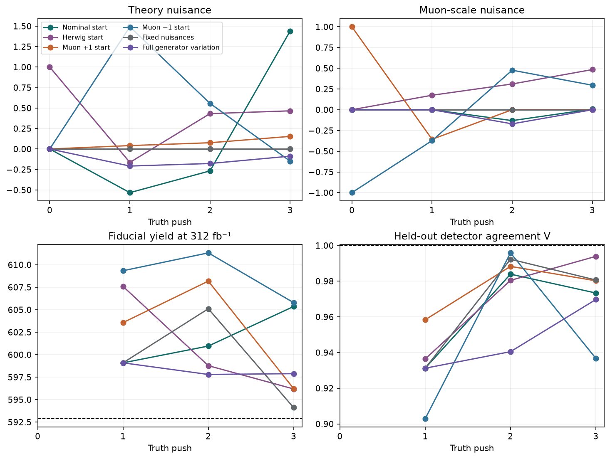
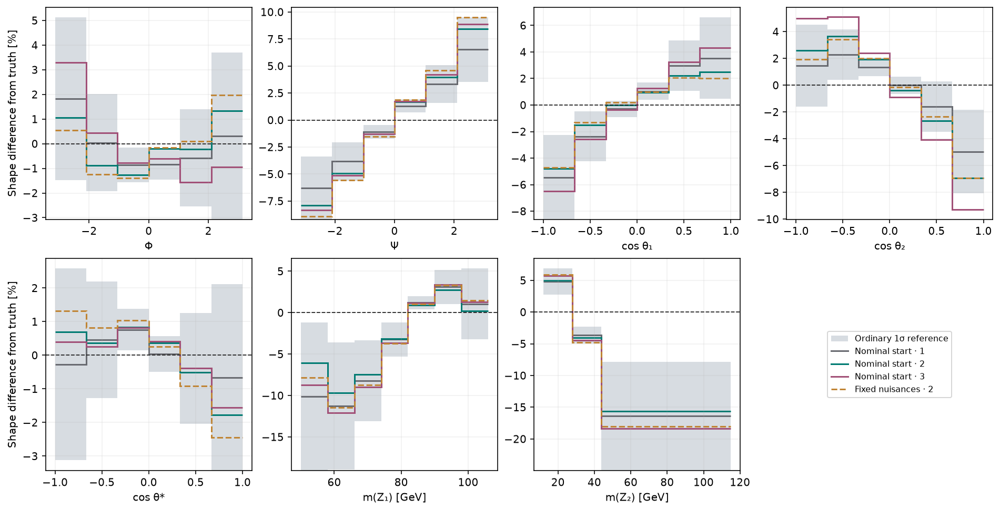
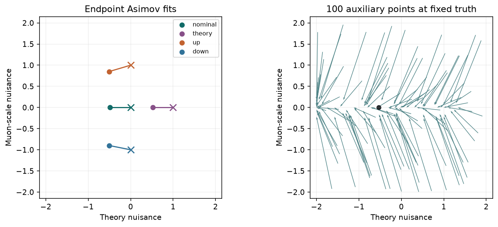

Ordinary Run 3 closure · Plot gallery · 2026-11-20 18:36 UTC
Direct-rate profile control
Return to the independent-integral results.
The first profile gives θtheory = -0.53 and θmuon = +0.00. At the second push the central profiled trajectory gives 600.96 fiducial events and the fixed-nuisance control gives 605.11. The injected truth is 592.87.
Does the fitted response change the unfolding?
Member 47, the fitted ZZ and nonfiducial subtraction, the seven decay observables, and the no-systematics training settings are fixed. At the nominal start the first truth push is the published ordinary result. Profiling updates the response after that push. Its effect on the truth estimate first appears at push two. The subsequent pushes test convergence.


Download all three figures in PDF.
| Start | Push | θ theory | θ muon | Fiducial | Refolded | V | Δ log L |
|---|---|---|---|---|---|---|---|
| Nominal start | 1 | -0.533 | +0.000 | 599.09 | 415.11 | 0.931 | +4.997 |
| Nominal start | 2 | -0.267 | -0.131 | 600.96 | 416.05 | 0.984 | +3.876 |
| Nominal start | 3 | +1.440 | +0.008 | 605.36 | 416.45 | 0.973 | +5.479 |
| Herwig start | 1 | -0.164 | +0.175 | 607.59 | 420.79 | 0.936 | +4.430 |
| Herwig start | 2 | +0.432 | +0.311 | 598.77 | 413.30 | 0.980 | +5.634 |
| Herwig start | 3 | +0.466 | +0.484 | 596.19 | 411.11 | 0.994 | +5.136 |
| Muon +1 start | 1 | +0.041 | -0.356 | 603.57 | 416.90 | 0.958 | +2.869 |
| Muon +1 start | 2 | +0.076 | +0.000 | 608.18 | 420.13 | 0.988 | +5.768 |
| Muon +1 start | 3 | +0.154 | +0.000 | 596.22 | 411.46 | 0.980 | +4.293 |
| Muon −1 start | 1 | +1.492 | -0.373 | 609.34 | 419.03 | 0.903 | +5.863 |
| Muon −1 start | 2 | +0.557 | +0.477 | 611.32 | 422.04 | 0.996 | +5.188 |
| Muon −1 start | 3 | -0.148 | +0.295 | 605.78 | 418.84 | 0.937 | +5.185 |
| Fixed nuisances | 1 | +0.000 | +0.000 | 599.09 | 414.29 | 0.931 | +4.852 |
| Fixed nuisances | 2 | +0.000 | +0.000 | 605.11 | 418.44 | 0.992 | +5.300 |
| Fixed nuisances | 3 | +0.000 | +0.000 | 594.11 | 410.74 | 0.981 | +4.283 |
| Full generator variation | 1 | -0.208 | +0.000 | 599.09 | 421.44 | 0.931 | +4.936 |
| Full generator variation | 2 | -0.177 | -0.170 | 597.80 | 419.38 | 0.940 | +6.094 |
| Full generator variation | 3 | -0.088 | +0.000 | 597.89 | 416.43 | 0.970 | +4.407 |
Δ log L includes the extended rate and the Gaussian auxiliary terms, relative to original nominal Pythia. Each refolding estimates its detector ratio with a new raw neural ensemble. Finite training and MC resolution affect comparisons across pushes.
Can the likelihood recover a known change?
The largest discrepancy between an injected Asimov nuisance and its fit is 0.51 auxiliary standard deviations. After three pushes the four starting responses span 1.59 in the fitted theory nuisance and 0.48 in the muon nuisance. Sensitivity to the likelihood normalization is 0.50 in the more affected coordinate. The anchor recovery or normalization dependence is comparable to an auxiliary uncertainty. The endpoint likelihood needs further validation before these fits can define a systematic uncertainty.
| Asimov sample | Generated nuisances | Fitted theory | Fitted muon |
|---|---|---|---|
| nominal | (+0, +0) | -0.487 | +0.000 |
| theory | (+1, +0) | +0.524 | +0.000 |
| up | (+0, +1) | -0.507 | +0.850 |
| down | (+0, -1) | -0.504 | -0.900 |

| Endpoint | Rate at first push | Held-out NN / physical ratio mean | Mean of seven shape distances before → after |
|---|---|---|---|
| theory | 412.75 | 0.9988 | 0.538% → 0.507% |
| up | 413.99 | 0.9979 | 0.850% → 0.687% |
| down | 412.86 | 0.9976 | 1.070% → 0.796% |
Using independent closure MC to integrate the same raw intensity changes the nominal fit to (-0.04, -0.09). Restricting the physical-rate fit to convex mixtures of the simulated responses gives (+0.00, +0.00).
Where the generator rate enters
With the full undeformed generator variation, the first fit gives (-0.21, +0.00) and the first feedback push gives 597.80 fiducial events. This version assigns the Herwig fiducial rate and truth-shape difference to the theory nuisance. The response-only version first maps Herwig to the common fiducial prior. The two fits quantify this modeling choice. Both include the muon-scale up and down responses.
| Unfolded prior T = 1 | Full-sample yield ratio | Pilot yield ratio | Held-out mean raw shape ratio | Training |
|---|---|---|---|---|
| theory | 0.91886 | 0.91683 | 1.00063 | Validation PDF |
| up | 0.99930 | 0.99924 | 0.99529 | Validation PDF |
| down | 0.99569 | 0.99657 | 1.00097 | Validation PDF |
Response and likelihood
The response banks retain one in sixteen hard-event identities from the four original ggH simulations. Their source partition is disjoint from the nominal pseudo-data. Signed weights are multiplied by sixteen. All fiducial events, including reconstruction losses, enter truth alignment. The inverse full fiducial Pythia-to-Herwig comparison maps the undeformed Herwig truth prior to Pythia before applying each new truth weight. This isolates the shower response and acceptance at fixed truth. The full-sample fiducial rate change belongs to the freely measured truth spectrum. The original unaligned rates remain available below.
At each truth push the NN reco likelihood supplies the nominal refolded intensity relative to original Pythia. Three additional ensembles compare each refolded endpoint with that nominal at the same truth weights. Their raw shape ratios and signed selected-yield ratios enter the unbinned extended likelihood. The detector term sums log intensity ratios weighted by the fixed member-47 purity weights. It is an effective likelihood for the subtracted data. A Poisson rate term uses the direct signed MC expectations, and independent unit Gaussian constraints use the two auxiliary observations.
The response is additive in the two nuisance directions, with piecewise-linear muon interpolation and linear reflection of the single Herwig endpoint. The pilot scans −2 to +2 in each nuisance. Reflected and simultaneous variations are assumptions. We check fitted intensity positivity on held-out simulated events and observed events. Updating the paired MC before the next pull transmits the fitted response to truth, including selection efficiency. The nuisance step maximizes the observed detector likelihood at fixed updated truth. The paper instead gives an EM complete-data nuisance update. We use its multiple-start and detector agreement checks. Profile OmniFold · ATLAS likelihood construction.
| Full merged signal | Signed fiducial events | Signed matched events |
|---|---|---|
| nominal | 647.55 | 448.99 |
| theory | 595.70 | 412.56 |
| up | 647.55 | 448.67 |
| down | 647.55 | 447.05 |
Network validation
The reco pull uses four networks with two 64-neuron layers. All other fits use four networks with four 1024-neuron layers, the ordinary training schedule and signed BCE. The endpoint architecture was fixed for this pilot. Each link opens the loss, held-out reweighting, raw calibration, score and ensemble plots for that stage. The nominal first push reuses its certified networks. Truth alignment validation.